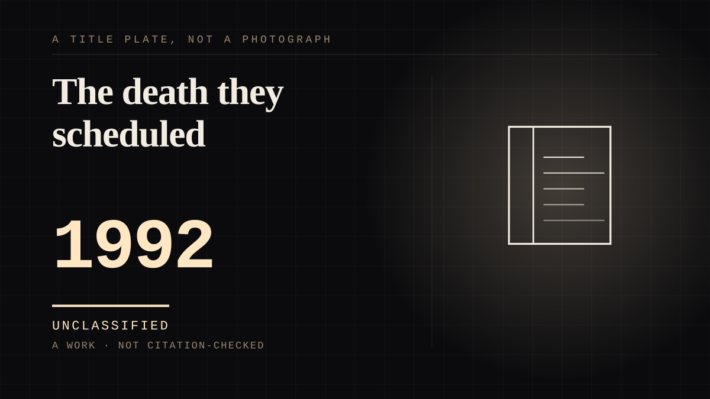

A work · 1992 ·
The death they scheduled
A publisher announced in advance that its most famous character was about to die, delayed every book in the line so the death could not be disproved by the next issue, and sold the gap.

It is the clearest case on this site of grief being manufactured and sold as a product, and the direction is unusual: everywhere else the far side is indifferent, unavailable or gone, and the near side does the rest. Here the absence itself was commissioned, scheduled and promoted by the people who owned the character, with no intention of it being permanent. The one detail that earns the entry is from a comic retailer who opposed it at the time and heard about it for the next decade: he still had non-readers a month telling him they had felt ripped off to have been tricked into believing Superman was really going to die. Everybody else grieved, and nobody on the far side ever noticed, but a handful of readers worked out that the feeling had been delivered to them on purpose - which is the moment the arrangement becomes visible from the near side, and the only time on this site where that happens by arithmetic rather than by somebody writing it down.
Where it sits
1950 1950-1999 · 1992 1999
Provenance · 4 source record(s)
- retrievableSuperman #75 sold over six million copies and became the top-selling comic of 1992; Adventures of Superman #500, which began his resurrection, was the best-selling comic of 1993. The teams delayed all Superman comics for three months to create the illusion that he had really been killed, because the solicitation cycle would have spoiled the resurrection. The issue brought in about US$30 million on its first day on sale, and sales from Superman #75 doubled DC's market share in November 1992.Wikipedia (2024). The Death of Superman. ↗
- retrievableCommentators have retrospectively dismissed the story as a publicity stunt; each series' sales immediately declined following the resurrection, and Wizard compared the phenomenon to the New Coke debacle.Wikipedia (2024). The Death of Superman. ↗
- retrievableA named retailer opposing the plan at the time, saying DC President Paul Levitz told him there was no turning back and that publicist Martha Thomases had saturated the news media with the word that Superman was about to die; and that he continued 'to hear from at least one non-comics fan a month about how they felt ripped off when they were tricked into believing that Superman was really going to die.' One retailer's account of what he was told in 1991, and of reader reaction afterwards; recorded as his recollection, not as industry fact.Rozanski, C. Tales From the Database, CBG #127. Mile High Comics. ↗
- retrievableDuring the early 1990s the comic book industry experienced a boom in sales, with books tied to DC's The Death of Superman crossover selling millions of copies; such growth proved unsustainable, as sales soon declined to a fraction of their previous levels.Britannica (2024). DC Comics. ↗
CHARACTER The written character
Connected · 1 out, 0 in
It sits in